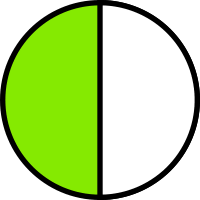
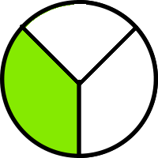
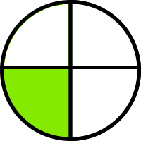

Hadi kesirleri öğrenelim

Daire iki eş parçaya bölünmüştür.
Bu parçalardan biri yeşile boyanmıştır. Yani dairenin yarısı yeşildir.
Bunu: 1/2 şeklinde gösteririz.
1 sayısı yeşil boyalı kısımdır.
2 sayısı şeklin parça sayısıdır.

Bir bütünü 3 eş parçaya ayırıp 1 parçasını boyuyalım.
1/3 kesri "üçte biri" diye okunur.
1 sayısı yeşil boyalı kısımdır.
2 sayısı şeklin parça sayısıdır.

Bir bütünü 4 eş parçaya ayırıp 1 parçasını boyuyalım.
1/4 kesri "dörtte biri veya çeyrek" diye okunur.
1 sayısı yeşil boyalı kısımdır.
2 sayısı şeklin parça sayısıdır.